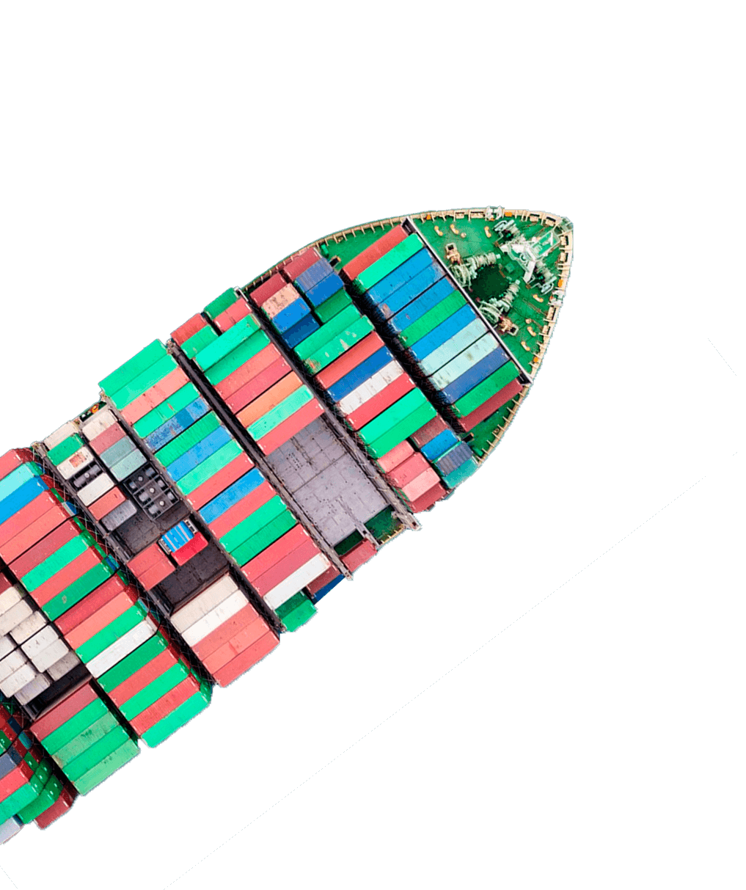
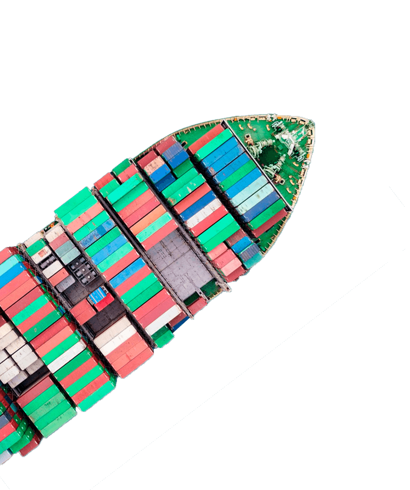

Drawback
O drawback é um serviço fiscal que tem como objetivo ajudar os exportadores brasileiros no processo de comércio internacional, por meio da redução, isenção ou suspensão de impostos sobre os insumos utilizados no processo de fabricação dos produtos.
A concessão desse benefício pode ser facilitada com a ajuda de empresas especializadas na assessoria de comércio exterior. Nesse segmento, a Saygo é uma das referências no mercado. Isso porque oferece diversas informações a respeito de todos os trâmites necessários para a obtenção do drawback. Além disso, também realiza a análise de viabilidade do regime para a sua empresa, com a finalidade de se beneficiar, com segurança, de todos os incentivos fiscais.
Essa atuação ocorre quando há importação ou aquisição no mercado interno de matéria-prima ou insumo de produto destinado à exportação, seja na modalidade suspensão, isenção ou restituição de tributos.
 

O que é o drawback?
De forma simplificada, podemos definir o drawback como um benefício aduaneiro especial, que concede a isenção, suspensão ou restituição de impostos. Ele é disponibilizado para insumos importados que vão ser usados na fabricação de produtos destinados à exportação.
Esse regime aduaneiro foi criado em 1996 pelo Governo Federal com o objetivo de trazer facilidades para empresas que trabalham com comércio exterior, estimulando e proporcionando a competitividade dos produtos brasileiros no mercado internacional.
preciso de uma assessoria de comexComo funciona?
O drawback funciona como um acordo entre a empresa exportadora e o Governo Federal, no qual ela declara formalmente que irá usar os insumos importados na industrialização dos seus produtos. Como contrapartida, o governo concede a isenção de impostos e fiscaliza a empresa.
O processo tem início quando a companhia exportadora solicita à Secretaria de Comércio Exterior (SECEX) uma autorização para importação ou compra de insumos, com drawback de suspensão de tributos. Assim, a SECEX se torna responsável por acompanhar, fiscalizar e comprovar que as isenções de impostos estão atendendo todos os critérios legais. Caso não se comprove, a empresa pode ser penalizada com sanções e multas.
Já quando o drawback é aprovado, a empresa pode fazer a importação dos insumos com benefício fiscal, bem como fabricar os produtos que serão exportados.
Modalidades
Como citamos acima, esse regime aduaneiro possui três modalidades diferentes, a de isenção, suspensão e restituição de impostos. Abaixo separamos as principais características de cada uma delas. Confira!
Isenção
É a modalidade de drawback que envolve a isenção de tributos incidentes na importação de insumos adquiridos anteriormente com o objetivo de reposição de estoque.Para ter direito a esse benefício, a mercadoria deve ser importada em quantidade e qualidade similares à última compra realizada. Essa categoria está ligada à Secretaria de Comércio Exterior (SECEX).
Suspensão
A suspensão dos tributos é direcionada para aquelas empresas que ainda não exportaram os insumos a serem industrializados. Essa modalidade de benefício é aplicada no momento em que os insumos são importados, dessa forma, se torna necessário que a empresa firme um compromisso de que os produtos serão exportados.Vale ressaltar que, se as condições não forem cumpridas com a exportação, a empresa necessita recolher os tributos com as devidas correções monetárias. O que pode pode gerar sanções futuras, como multas e perda do benefício.
Restituição
É a modalidade de drawback que envolve a restituição, total ou parcial, dos impostos pagos por ocasião da importação de mercadoria utilizada na industrialização de produto exportado, sendo concedido pela Receita Federal do Brasil.As exportações possuem uma grande influência na evolução do Produto Interno Bruto (PIB) dos países, assim, o drawback colabora não apenas para favorecer as exportações como também para a fortificação do produto nas nacionais em solo estrangeiro.